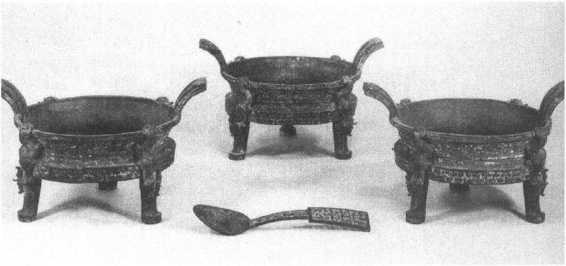
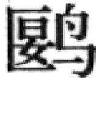
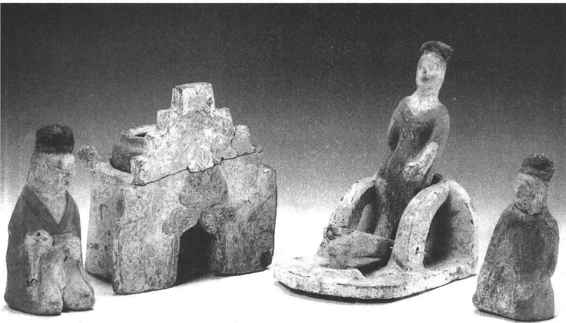
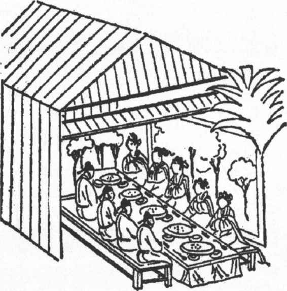
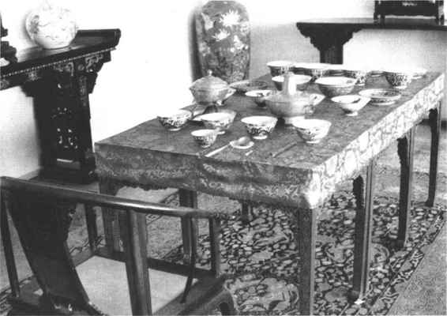

西周建国伊始，统治者接受商王朝倾覆的教训，严禁饮酒。《尚书·酒诰》记载了周公对酒祸的具体阐述，他说戒酒既是文王的教导，也是上天的旨意。上帝造了酒，并不是给人享受的，而是为了祭祀。周公因此制定了严厉的禁酒措施，规定周人不得“群饮”、“崇饮”（纵酒），违者处死。包括对贵族阶层，也要强制戒酒。
禁酒的结果，酒器派不上用场了，所以考古发现西周时的酒器远不如商代那么多，即便在一些大型墓葬中，甚至一件酒器也找不到，而食器的随葬却有逐渐增加的趋势。在贵族墓葬中，一般都随葬有食器鼎和簋，鼎多为奇数，而簋则是偶数，鬲则随而增减。在考古发掘中，常常发现用成组的鼎随葬，这些鼎的形状，纹饰以至铭文都基本相同，有时仅有大小的不同，容量依次递减。这就是“列鼎而食”的列鼎。
列鼎数目的多少，是周代贵族等级的象征。用鼎有着一套严格的制度，据《仪礼》和《礼记》的记载，大致可分别为一鼎、三鼎、五鼎、七鼎、九鼎等。九鼎为天子所用，东周时国君宴卿大夫有时也用九鼎。
簋盛饭食，用簋的多少，一般与列鼎相配合，如五鼎配四簋，七鼎配六簋，九鼎配八簋。九鼎八簋，即为天子之食，算是最高的规格。
这种饮食上的等级制度，被原封不动地移植在埋葬制度中。考古发现过属于国君的九鼎墓，也有不少其他等级的七鼎、五鼎、三鼎和一鼎墓，没有鼎的小墓一般都见到陶鬲，这是平民通常所用的炊器。能随葬五鼎以上的死者，不仅有数重棺椁，还有车马殉人，各方面都显示出等级的高贵，他们属高级贵族。（图21—2）

图21-2 湖北随州曾侯乙墓出土的铜列鼎
鼎不仅被看做是地位的象征，而且也是王权的象征。陶鼎的制作与使用可以上溯到七千多年以前，作为家国重器的三足两耳铜鼎在商代才开始流行。原先仅仅作为烹饪食物之用的鼎，在商代贵族礼乐制度下成为第一等重要的礼器，又称作彝器，即所谓“常宝之器”。鼎不再是一种单纯的炊器和食器，它成了贵族们的专用品，演化为统治权力的象征。一般平民不仅绝不允许使用铜鼎，即便是陶鼎，也断然不行。
与鼎相配的簋，形似碗而大，有盖和双耳。簋通常用于盛饭食，九鼎所配的八簋究竟盛哪几种饭食，并不十分清楚。据《礼记·内则》所列，饭食在周代确有八种，分别是黍、稷、稻、粱、白黍、黄粱、稰（成熟而收获的谷物）、穛（未完全成熟的谷物），或许即为八簋所盛。
贵族们在古代被称为“肉食者”，这是他们饮食多肉的缘故。东周时烹饪技术有较大发展，肉食制品种类增多，进食方式也有了改进，餐叉的流行，正是这些变化的一个结果。
周代天子的饮食分饭、饮、膳、馐、珍、酱六大类，其他贵族则依等级递降。
天子之馐多至百二十品，不可枚举。燕时还另加有“庶羞”，包括牛脩、鹿脯、田豕脯、麋脯、麕脯，还有雀、、蜩（蝉）、范（蜂）、芝、栭（小栗）、菱、椇（白石李）、枣、栗、榛、柿、瓜、桃、李、梅、杏、楂、梨、姜、桂，瓜果辛物，应有尽有。
周代精心烹制的八种珍食，都是用独特方法制作的风味馔品。其烹调方法完整地保存在《礼记·内则》中，是古代典籍中所能查找到的最古老的一份菜谱。八珍可以看做是周代烹饪发展水平的代表作，无论在选料、加工、调味和火候的掌握上，都有一定的章法，形成了一套固定的模式，奠定了中华民族饮食烹饪传统的基础。
贵族们总是在引领饮食潮流，站在潮流前方的是历代的帝王们，他们的味蕾让历史盛宴不断翻新着花样。
晋武帝司马炎是西晋奢侈之风的倡导者，他的大臣和亲信有许多也都因奢侈而著名，《晋书》有十分详尽的记载。位至三公的何曾，史称其生活最为豪侈，甚至超出帝王之上。日食万钱之费，他自己却还说没有下筷子的地方。何曾的儿子何劭，累迁侍中、尚书、司徒，任太子太师，骄奢更甚，远远超过他父亲之上。何劭吃起饭来，“必尽四方珍异，一日之供，以两万钱为限”，当时人以为太官准备的皇帝御膳，也没法与何劭相比。何每次赴晋武帝的御筵，都要带着家厨精心烹制的馔品，根本不吃太官准备的膳食，武帝也拿他没有办法，只得让他拿出带来的美味吃。何曾确实也算得是少有的美食家，家传有独到的烹饪术，自己还撰有名曰《食疏》的菜谱，为士大夫所侧目。
石崇官至太仆，晋武帝帮助母舅王恺与他斗富，始终没能胜过他。王恺家里洗锅用糖浆而不用水，以此炫耀富有。石崇则以白蜡当柴烧，以示更富。他们还在酒宴上斗试阔派。王恺请客人饮酒，命美女在一旁奏乐，乐声稍有失韵走调，美女即刻就被拉出去杀掉。石崇也不逊色，他是让美女为客人劝酒，如果客人不饮或饮得不畅快，美女也会遭杀害。有一次石崇的贵宾是武帝的女婿王敦，这王敦也着实无一点人性，竟然故意缄口不饮，结果连续有三个劝酒的美女成了酒筵前的刀下鬼。
南北朝时奢侈之风更是刮遍朝野，上行下效。（图21—3）南朝齐东昏侯萧宝卷也是个荒淫皇帝，他以汉灵帝游乐西园为榜样，在芳乐苑中立市做买卖，也是让宫女当酒保，游玩取乐。他还让宠妃潘氏为市令，自任市魁，纠察市中。

图21-3 咸阳北周武帝孝陵出土庖厨俑
类似于何曾的人，南北朝也有，远远超出者，也大有人在。这时又有一种别样风气，菜肴不仅讲究味美，而且注重形美，有人形容说：“所甘不过一味，而陈必方丈，适口之外，皆为悦目之资”（《宋书·孔琳之传》）。一个人的胃容量总是有限的，可一顿饭动辄摆出许多盘盏，仅是悦目而已。所谓“积果如山岳，列肴同绮”，“未及下堂，已同臭腐”（《梁书·贺琛传》）。瓜果菜肴摆得很多，只是为好看，吃不了的都得倒掉。大型的花式拼盘菜肴，也是这个时期的发明。北齐光禄大夫元孝友有一段话谈到了这些情况，他说，“今之富者弥奢，同牢之设，甚于祭盘。累鱼成山，山有林木，林木之上，鸾凤斯存。徒有烦劳，终成委弃”（《北齐书·元孝友传》）。把鱼摆成山丘之形，再用肉类植成林木，又有雕刻的鸾凤亭立于林木之上。这不是风景盆景，却胜似盆景，它把吃变成了地道的艺术欣赏，这恐怕是最早最考究的花色拼盘了。
一般的富贵之家也不甘落伍，变着法子享乐。刘宋风雅参军周朗对当时的情况这样说：一年到头，也穿不了几件好衣服，却准备了一箱又一箱；即便身上挂满金玉，也用不到一百两，却收藏了一椟又一椟。役使奴婢，也没有定数，本来一个奴婢就够了，却要用两个以至几个。“瓦金皮绣，浆酒藿肉者，不可称纪”，视金子如瓦砾、绮绣如毛皮，将美酒当水浆、肉鱼当菜叶者，不计其数。
隋唐时历史进入到一个最辉煌的发展时期，政局比较稳定，经济繁荣，饮食文化也随之发展到新的高度。君臣上下的欢宴，士大夫畅心的宴游，胡姬美酒的西来，交织成一幅幅色彩斑斓的风俗图卷。
那些高高在上的将相，醉生梦死，李白诗《行路难》的“金樽美酒斗十千，玉盘珍羞直万钱”，正是他们生活的写照。中唐时的一个宰相裴冕，性极豪侈，衣服与饮食“皆光丽珍丰”。每在大会宾客时，食客们都叫不出筵席上馔品的名字，丰盛之极。另一个差一点而当宰相的韦陟，每顿饭吃完之后，“视厨中所委弃，不啻万钱之直”，扔掉的残馔都有万钱之多。这韦陟有时赴公卿们的筵宴，虽然是“水陆具陈”，珍味应有尽有，却连筷子都不动一下，他看不上眼。宰相李吉甫的儿子李德裕，后来也做了宰相，他也是穷奢极欲，有钱不知如何花费才好。李德裕吃一杯羹，费钱三万之巨，羹中杂有宝贝珠玉、雄黄朱砂，只煎三次，这些珠宝便倒弃在污水沟中。
宰臣们尽管家中有享不完的四方珍味，还能常常在朝中得到一顿顿丰盛的美餐。唐代继承了自战国时起各代例行的传统，为当班的大臣们提供一顿规格很高的招待午餐。国家富强了，这顿饭也越发丰盛了。丰盛到什么程度呢？到了宰臣们都不忍心动筷子的地步，因为不忍心再这样挥霍下去，以至几次三番提出要求“减膳”。唐太宗时的张文瓘，官拜侍中，兼太子宾客，累官黄门侍郎，这个官几乎与宰相相差不多。他和其他宰臣一样，每天都能从宫中得到一餐美味。和张文瓘同班的几位宰臣见宫内提供的膳食过于丰盛，提出稍稍减扣一些。张文瓘坚决不同意，而且还认为这是理所当然，他说“这顿饭是天子用于招待贤才的，如果我们自己不能胜任这样的高职位，可以自动辞职，而不应提出这种减膳的主意，以此来邀取美名。”这么一说，众人减膳的提案不得不作罢。唐代宗时，有一位“以清俭自贤”的宰相常衮，看到内厨每天为宰相准备的食物太多，一顿的馔品可供十几人进食，几位宰相肚皮再大也不可能吃完，于是请求减膳，甚至还准备建议免去这供膳的特殊待遇。结果呢，还是无济于事，“议者以为厚禄重赐，所以优贤崇国政也。不能，当辞位，不宜辞禄食”（《旧唐书·常衮传》）。这与百年前张文瓘的话是同一腔调，也即是说，宰臣们有权享受最优厚的待遇，你想推辞这种待遇，反倒被认为是不正常的举动。（图21—4）

图21-4 敦煌壁画宴饮图
有高官就有了厚禄，高官得中，第一件事就是大吃大喝，大摆筵席，广贺高升。至晚从魏晋时代开始，官吏升迁，要办高水平的喜庆家宴，接待前来庆贺的客人。到唐代时，继承了这个传统，大臣初拜官或者士子登第，也要设宴请客，还要向天子献食。唐代对这种宴席还有个奇妙的称谓，叫做“烧尾宴”，或直曰“烧尾”。这比起前代的同类宴会来，显得更为热烈，也更为奢侈。
烧尾宴的形式不止一种，除了喜庆家宴，还有皇帝赐的御宴，另外还有专为给皇帝献的烧尾食。除了赐宴不必非有以外，家宴与献食皇上都是决不可少的。献给皇帝的烧尾食究竟是些什么呢？我们从宋代陶谷所撰《清异录》中可窥出一斑。书中说唐中宗时，韦巨源拜尚书令（尚书左仆射），照例要上烧尾食，他上奉中宗食物的清单保存在传家的旧书中，这就是著名的《烧尾宴食单》。食单所列名目繁多，《清异录》仅摘录了其中的一些“奇异者”，达58款之多，如果加上平常一些的，也许有不下百种哩！
从这58款馔品的名称，一则可见烧尾食之丰盛，二则可见中唐烹饪所达到的水平，因为保存如此丰富完整的有关唐代的饮食史料，除此还不多见。
拜得高官者，要给皇上“烧尾”，没有机会做官的皇室公主们，也仿效烧尾的模式，寻找机会给皇上献食，以求取恩宠。据《明皇杂录》说，唐玄宗李隆基时，诸公主相效进食，玄宗“命中官袁思艺为检校进食使”，专门清点登记献上来的食物。所献食物，“水陆珍羞数千盘之费，盖中人十家之产”，耗费之巨，不亚于大臣“烧尾”。
向皇上进献的馔品，多为家厨所为。官僚们一般都十分注重家厨的传统，如被封为邹平公的宰相段文昌，他自己便十分精于馔事，府第中的厨房命名为“炼修堂”，行厨则称为“行珍馆”。段文昌的家厨由一个名叫膳祖的老婢主管，她训练女仆学厨，传授她们烹饪技巧。真正学成者并不算多，膳祖四十年间教了一百多人，只有九人算是学到了家。这段丞相还自编《食经》五十卷，称为《邹平公食宪章》。
历代管理帝王御膳都有专设的机构，有专门的官员。清朝是中国历史上最后一个封建王朝，帝后的膳食集历朝陈规，有庞大的管理机构，也有大量的厨役，这一切都是空前绝后的。帝后的特权与尊严，在他们的饮食生活中得到了最充分的体现。
清代宫中膳食的管理机构，主要为内务府和光禄寺，不过实际上直接掌理宫廷膳食的是“御茶膳房”。御茶膳房设管理大臣若干人，由皇帝特别简派。下面再设尚膳正、尚膳副、尚膳、主事等职，作为次一级的管理官员。
御茶膳房分茶房、清茶房和膳房三部。后来膳房又有内膳房和外膳房之分，内膳房下设荤局、素局、点心局、饭局、挂炉局和司房等机构，专门承制帝后和妃嫔们的日常膳食。以后宫中又陆续设立了皇子饭房和茶房，还有专为老太后太妃承办茶膳的寿康宫茶膳房。
帝后所用的膳食也并不全在御茶膳房制备，有时由另一个称为“掌关防管理内管领事务处”的机构办理。这个机构下设官三仓、恩丰仓、内饽饽房、外饽饽房、酒醋房和菜库等。
官三仓主要负责备办宫中祭祀和筵宴所需米、麦、盐、蜜、糖、醋、油、面及豆、谷、芝麻、高粱等一切杂粮。恩丰仓专供太监所用米粮，定期发放。内饽饽房承做帝后早晚膳所用的各样饽饽、花糕、每月朔望佛楼所用的“炉食供”和佛城用的“玉露霜供”等等。每逢上元、端午和中秋，宫中所需的元宵、粽子和月饼，亦归内饽饽房承办。外饽饽房备办供桌、大宴桌、筵宴外藩蒙古王公的班桌、各位妃嫔和皇子用的翟鸟桌、赏赐用的跟桌、七星供桌及寺庙用的供饼等。
酒醋房为内宫特酿玉泉酒、白酒、醋、豆酱、面酱、清酱、酱包瓜、酱整瓜、酱瓜条、酱王瓜、酱茄子、酱苤蓝、酱胡萝卜、酱紫姜、酱糖醋蒜、酱豆豉、酱莴笋、酱冬瓜片等，这些是用于调剂帝后吃腻了的胃口的。菜库管理和供应宫中所需瓜菜，这些瓜菜均由各地菜园头、庄头和瓜园头每年按量缴纳，少量缺货须到市上采买。
光禄寺专掌各类宫廷筵宴的备办，内廷和宗室筵宴不在此列。光禄寺分设大官署、珍馐署、良酝署、掌醢署等机构，各司其职。
清代皇帝平日用膳没有固定的地点，一般多在寝宫和经常活动的地方。每天分早晚两次进餐，早膳在上午六七点钟，晚膳在中午十二时至二时之间。晚上六点前后的“晚点”不包括在内，那不是正膳。正膳之外的酒膳和小吃一般没有固定的时间，由皇帝随意命进。
每到皇帝用膳时，太监先在传膳处摆好膳桌，御膳房的膳食一运到，就迅速按规定摆放妥当。（图21—5）皇帝进膳，心里并不踏实，时刻担心会有人谋害他，深恐有人在饭菜中下毒。他在动筷子之前，要先看看菜盘中插着的一块小银牌的颜色。看罢银牌，皇帝仍不大放心，还要命随侍的太监用筷子先尝尝每道菜点，这是一道绝不可少的程序，谓之“尝膳”。

图21-5 清代帝后膳桌
如果未经皇帝特别恩准，任何人都不得与他在同一张桌子上进膳，这大约是当皇帝最寂寞的时刻。皇太后、皇后和妃嫔，一般都在各自居住的宫中用餐，也不大容易与皇帝一起品尝美味。
皇室档案保存至今的，只有清代的较为完整，这些档案对清宫帝后膳食记录比较详细。清代档案中保留的皇帝大批膳单，膳单上有时还详细注明早晚用膳的时间、用什么样的膳桌，主要菜肴还指明烹制厨师的名姓，注明用何种餐具盛送。